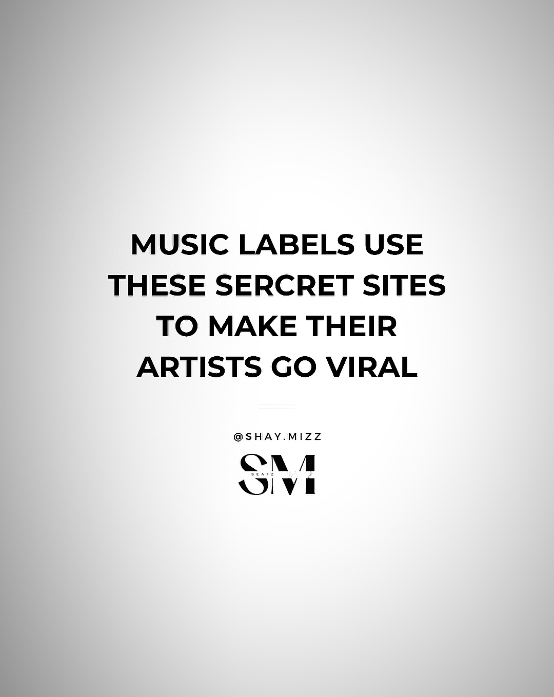
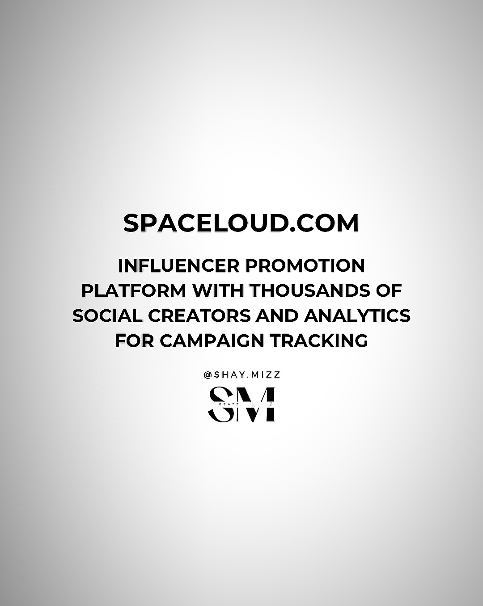
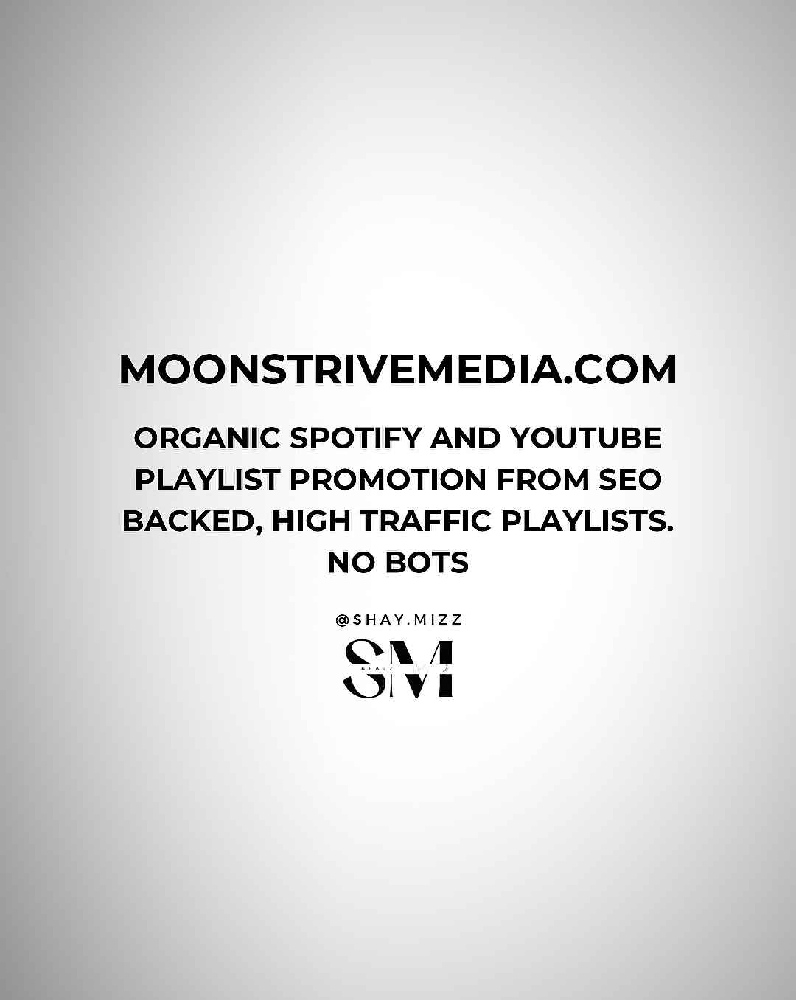

Industry·2 min read
Music Labels Use These Secret Sites to Make Their Artists Go Viral
MusoSoup, YouGrowPromo, SpaceLoud, Orion Promotion, MoonStrive Media — the five-platform promo stack behind most “organic” breakouts, decoded from @shay.mizz’s deck.

There is a reason two unrelated artists can “blow up” in the same fortnight: breakouts are increasingly campaigns, not accidents. A deck by @shay.mizz lays out the five-platform stack most labels run behind the scenes. Swipe the slides above; here is what each tool actually does.
MusoSoup.com — submit your music once and get pitched to multiple blogs, curators and TikTokers at once, with a money-back guarantee if the campaign under-delivers. It is the top of the funnel: one upload, many doors.
YouGrowPromo.com — support for Spotify, TikTok, YouTube and Instagram under one campaign manager, also money-back guaranteed. This is the middle layer: paid-but-platform-safe growth tuned per network.
SpaceLoud.com — an influencer promotion marketplace with thousands of social creators and analytics for campaign tracking. You are buying reach with receipts: every creator post is measured.
OrionPromotion.com — expert playlist pitching plus social and influencer campaigns, with real-time analytics. The dashboard is the product: watch saves, skips and adds as they happen.
MoonStriveMedia.com — organic Spotify and YouTube playlist promotion from SEO-backed, high-traffic playlists. Explicitly no bots, which matters: fraudulent streaming is the one shortcut that gets catalogues removed.
None of this replaces a good record — every platform here only amplifies what already works. But if you have ever wondered how a song you love found ten thousand strangers in a week, this stack is the honest answer.
The deck, slide by slide


Scroll sideways · tap any slide to enlarge · arrow keys to move, Esc to close.
Slides: @shay.mizz